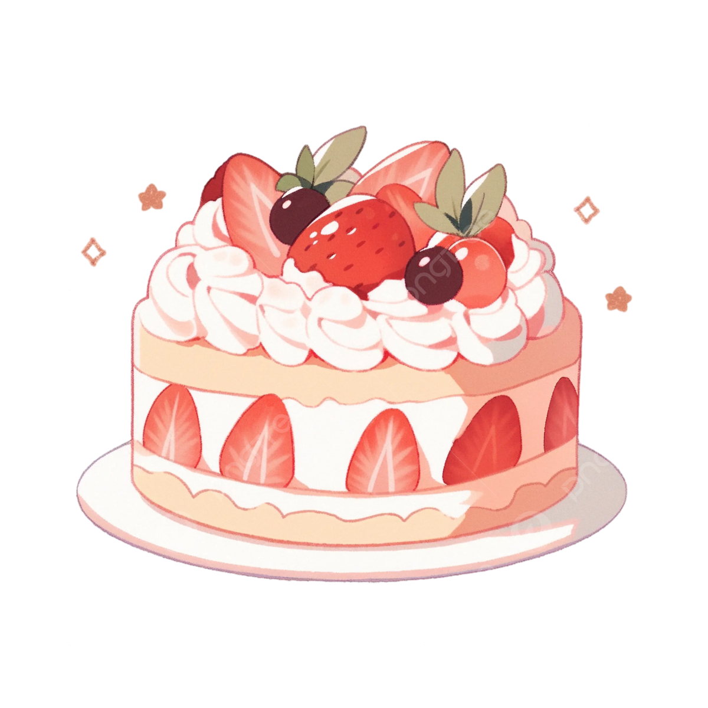

Magic Desserts
|
Magic Desserts |
|||

|  | Introducción Si estas buscando un sitio para aprender nuevas recetas de postres, haz llegado al lugar correcto, aqui te ofrecemos todo para que puedas recrear los postres mas sencillos y super deliciosos. |
||
| Postres Los postres son un alimento que endulza y le da un toque diferente a la rutina. Sonreimos cuando probamos una de estas deliciosas preparaciones y no podeos evitar la alegria al percatarnos de nuestro desepeño en la cocina |
 |
Encuentranos en redes sociales como
@magicdesserts.sm